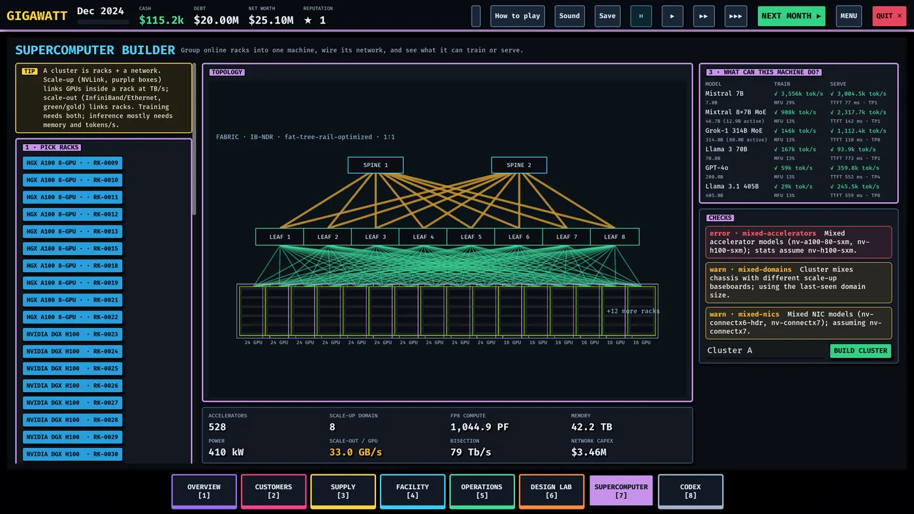

Networking and clusters
Scale-up versus scale-out, fabrics and oversubscription, and how the Supercomputer screen turns racks into one machine.
A cluster is racks plus a network fabric. Racks that aren't clustered can still serve inference straight from the Customers screen, but a training customer rents one big coherent machine — that's what you build here.
Two kinds of network
- Scale-up (NVLink) links GPUs inside a node or rack at TB/s and makes them act like one GPU with one memory domain. Model-parallel and MoE traffic lives here. Contracts state the scale-up domain they need (a 72-GPU NVLink domain comes from a GB200 NVL72 rack).
- Scale-out (InfiniBand / Ethernet) links nodes and racks at 25–100+ GB/s per GPU. Data-parallel gradients cross this one. Contracts also state the GB/s per GPU they expect.
Wrong balance between the two means idle GPUs. Training needs both; inference mostly needs memory and tokens per second.
The Supercomputer screen
- Pick racks — any online racks not already in a cluster, across all halls.
- Wire the network — the easy way is Auto-design for TRAINING (finds the cheapest fabric that meets the year's expected GB/s per GPU) or Auto-design for INFERENCE (cheaper still). The advanced panel exposes everything: scale-out tech (InfiniBand NDR/XDR, Spectrum-X, 400G/800G Ethernet, RoCE, Ultra Ethernet), topology (fat-tree rail-optimized, fat-tree, single-domain, dragonfly, torus-ish), leaf and spine switches, node→leaf and leaf→spine cables, and an oversubscription slider.
- Read the stats — accelerators, scale-up domain, FP8 compute, memory, power, effective GB/s per GPU, bisection bandwidth and network capex.
- What can this machine do? — a per-model table showing whether the training state fits (tokens/s and MFU) and whether weights fit for serving (tokens/s, time-to-first-token, tensor-parallel size).
- BUILD CLUSTER.
Existing machines can be unclustered and re-clustered at any time — dissolve one, adjust the rack selection, rebuild. Clusters show in the hall as colored markers, and each rack's inspector says which cluster and customer it belongs to.

Oversubscription
Spine uplinks can carry less than the sum of leaf downlinks — that ratio is oversubscription. 2:1 cuts your spine cost while slowing collective operations. Pick 1:1 for training (big all-reduce traffic punishes congestion) and 2–4:1 for inference, where it is usually fine and much cheaper. The stats panel flags effective GB/s per GPU below the year's training tier.
Design rules of thumb
- One NIC per GPU, rail-optimized, for training trays; half that for inference (the tray sizing advisor checks this).
- The scale-up domain decides which models you can serve efficiently — MoE expert parallelism and huge-model inference want everything inside one NVLink domain.
- At scale, the network IS the computer: past a few hundred GPUs, bisection bandwidth and failure rates dominate training efficiency. The 256-accelerator mission exists to teach this.
- HBM and the KV cache decide inference capacity: GPU memory holds the weights plus every active request's cache. No room to batch users means tokens/s you can't sell. The "what you need to buy" checks on contracts verify this for you.
- Fewer, bigger switches (higher radix) mean fewer tiers, fewer hops and less cabling power per GPU — a generation of 102.4 Tb/s switch silicon halves switch count for the same fabric.
Internet transit
Customer-facing bandwidth lives on the Build screen: buy IP transit circuits, watch demand (Gb/s) against your uplink capacity, and — before signing SLA-heavy contracts — buy a second carrier on a physically diverse path. One circuit is one backhoe away from an outage (see Incidents and resilience).
Related: Customers and contracts for assigning clusters, Hardware roadmap for how fabrics evolve.
Found a mistake or something missing? Edit this page on GitHub or ask in Discussions.